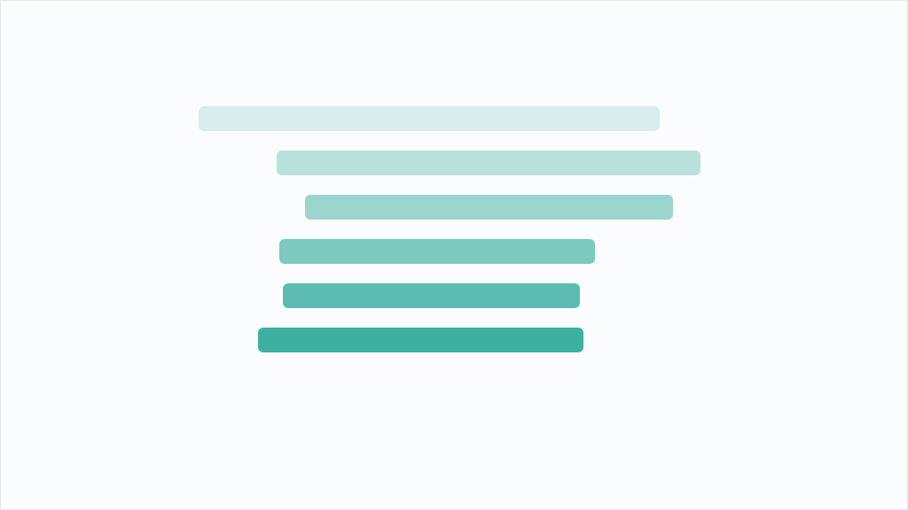

寝ている間にAIに実装させるため、私は「契約書」を書いた

寝ている間にAIに実装させるため、私は「契約書」を書いた。前回、コードが読めない私がClaude Codeに実装を委任して脆弱性トリアージCLI「triage-lens」を作った話を書いた。今回はその続きで、Phase 2の機能追加を私が寝ている間にすべて無人でやらせてみた。朝起きると、テストは145件から330件に増え、別のAIによる敵対的レビューと修正まで終わっていて、PRが1本マージされずに待っていた。さらに、私の与り知らないところでPRがデッドロックに陥り、勝手に復旧されてもいた。
寝る前に行ったのは、承認プロセスを「契約書」に置き換えることだった。これまでは「計画を提示して、私の承認を得てから実装する」というルールがあった。品質の要だが、寝ている間は承認できない。かといって外すのは怖い。そこで承認の代わりに4つの取り決めを入れた。今夜やっていいのはCycloneDX形式の入力対応、英語レポート、READMEの3つだけというスコープの固定。mainへの直接pushとマージの禁止、公開リポジトリへの同期の禁止という越えてはいけない線。要件の解釈に迷ったら実装しない側に倒してIssueに疑問を書き残すという倒し方。そして非エンジニア向けの3行報告、コピペで打てる動作確認コマンド、テスト結果、私が判断すべきことの有無を含む朝の報告形式だ。要するに、途中で私に聞く代わりに「判断の痕跡を残せ」という契約である。承認を消したのではなく、朝に事後承認できる形へ置き換えたわけだ。
起きると報告が届いていた。テスト330件はすべて緑、CIも3バージョンで緑、PRは未マージのまま。指示どおりの結果だ。面白いのはここからで、Claude Codeは実装を終えると、指示に従って別のAI（codex CLI）にコード全体を渡し、敵対的なレビューを受けていた。指摘は7件。それを鵜呑みにせず、1件ずつ再現試験で裏取りし、スコープ内の4件を修正し、判断が割れる3件はIssueとして起票だけして寝かせてあった。修正された欠陥のうち2つは、セキュリティツールとして見過ごせない種類のものだった。ひとつは、脆弱性の「影響を受けないバージョン」を「修正版」と読み替えてしまい、条件によっては古いバージョンへのダウングレードを勧める出力になっていたこと。もうひとつは、入力形式の判定が緩く、Trivyの出力を別形式と誤判定して検出0件のレポートを出す経路があったことだ。どちらも「危険なものを安全に見せる」方向の間違いで、前回書いた「悪用確率不明を『低い』と表示していた」欠陥と同じ系統である。
デッドロックの一件も記しておく。報告には、ブランチを削除したら未マージのPRが自動でクローズされ、「クローズ済みPRはベース変更不可」「ベースブランチがないと再オープン不可」という行き詰まりに入ったので、ブランチを一時的に復元して復旧した、とあった。正直に言えば、朝の私にはこれが何を意味するのか理解できなかった。それでも読み進められたのは、報告が「何が起きたか・なぜ起きたか・どう復旧したか・いまどうなっているか」の順で書かれ、最後に検証可能な現状（PRは同じ番号のまま生きている、ベースはmain、マージ可能）が添えてあったからだ。中身を理解できなくても、報告の形が揃っているかどうかは判定できる。コードが読めない人間がAIの仕事を捌くとき、頼れるのは結局この「形」なのだと思う。内容はあとでAIにかみ砕いてもらい、自分の言葉で説明できる状態にしてから納得した。
朝の裁定で、起票されたIssueのうち1件だけは公開前に潰すと決めた。同じ脆弱性が2箇所で検出されたとき、重複除去で先に来た方を残す実装になっていて、条件次第でCVSSの高い方が消える。つまりリスクを過小表示する系統だからだ。修正のPRで印象的だったのは、テストの検証方法である。修正後にテストが通るのは当たり前なので、実装をわざと元の「先勝ち」に戻すとテストが17件落ちることまで確認させた。テストが本当に欠陥を捕まえているのか、それとも通るように書かれただけなのか。コードが読めなくても、この確認は依頼できる。
もうひとつ気に入っている判断がある。修正バージョンが食い違うとき「新しい方を残す」ルールを入れたが、バージョン番号の比較は「1.2.10」のような数字とドットだけの表記に限定した。Debianのepoch付き表記などまで独自解釈すると、誤った新旧関係を作りかねないからだ。比較できないものは安全側で「不明」に倒す。全部を賢く処理しようとしないことも、セキュリティの判断だと思う。最終的にテストは373件になり、v0.2.0として公開した。
一晩やらせてみた結論として、線をどこに引くかは自分が何に重きを置くか次第だと感じている。私の場合、それは「危険を安全に見せていないか」だった。トリアージツールにとって一番やってはいけない嘘がそこにあるからで、この部分の品質は人間が検証に関わって担保すべきだと思う。逆に言えば、別AIのレビュー、再現試験、報告の形式といった仕組みを契約書に書いておけば、実装そのものは寝ている間に進めてよい。
これが読み物を作る仕事なら、面白く読み続けられるかどうかを人間が担保することになるのだろう。何を機械に任せ、何に自分の目を残すか。その設計こそが、AIに委任する側の仕事なのだと思う。リポジトリは公開している。次回は、このツールの中身の話、つまりCVSSだけで脆弱性対応の順番を決めると何が起きるか、EPSSとCISA KEVをどう重ねるかを書く予定だ。
※ 上記は配信元記事をもとにAIの鬼編集部が要約・再構成したものです。正確な内容は出典元をご確認ください。
このニュースの全文は、配信元でお読みいただけます。 Zenn AIで元記事を読む →